本文章將介紹使用 GoCoder 串流到 wowza 在串流輸出到 youtube 直播
ps.youtube 輸出方法其他串流方式也是相同，本文章使用比較方便的手機 GoCoder 介紹
首先開啟 youtube 點擊右上角進行直播
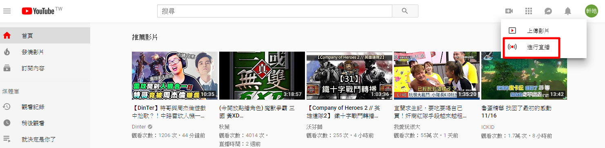
下圖為直播設定畫面
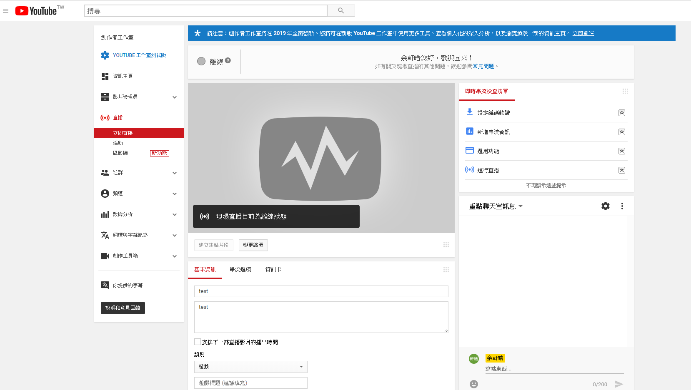
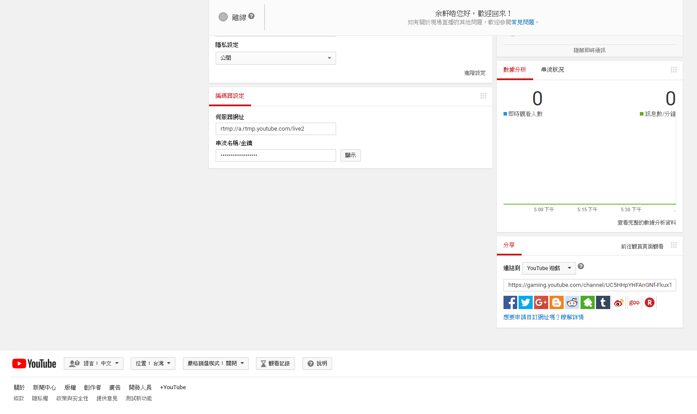
接下來到 wowza → Stream Targets → Add Stream Targts 設定輸出
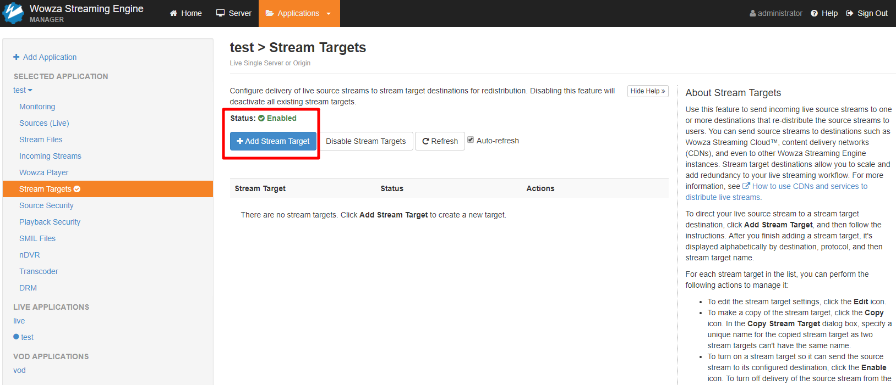
選擇 youtube
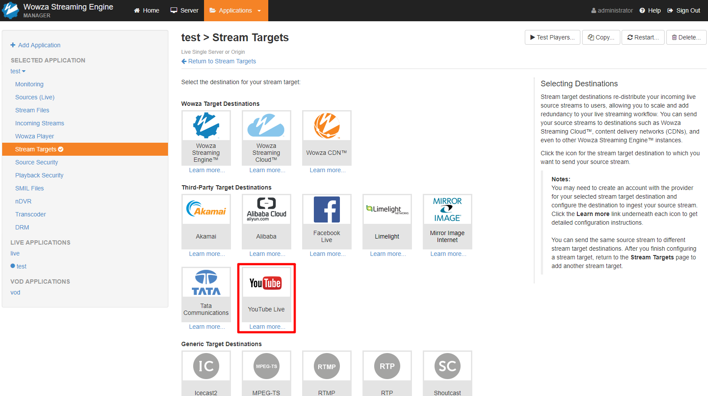
設定參數 Stream Targets Name：隨意命名、Source Stream Name：Stream File Name
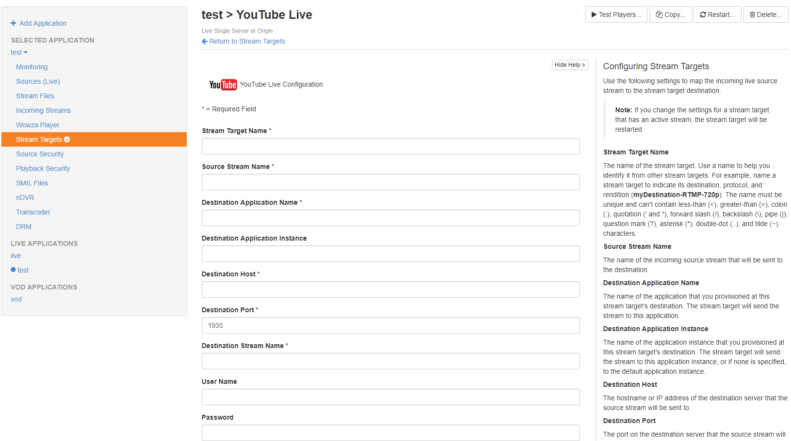
Destination Application Name 對照 youtube 的直播設定畫面 → 編碼器設定 → 伺服器網址的 live2、Destination Host 對照 youtube 的直播設定畫面 → 編碼器設定 → 伺服器網址的 a.rtmp.youtube.com
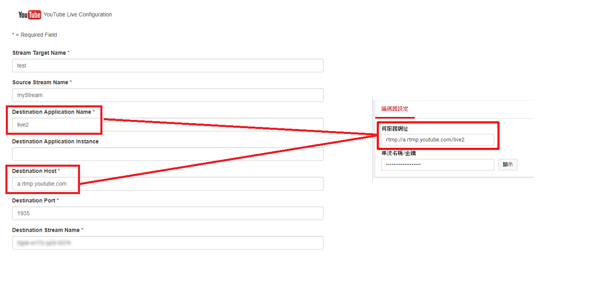
到 youtube 直播設定畫面 → 編碼器設定 → 串流名稱/金鑰，點擊顯示會出現金鑰，金鑰重設也是在這邊進行
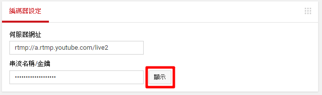
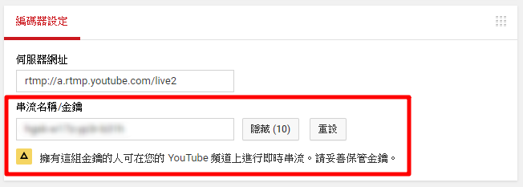
獲得的金鑰輸入在 Destination Stream Name
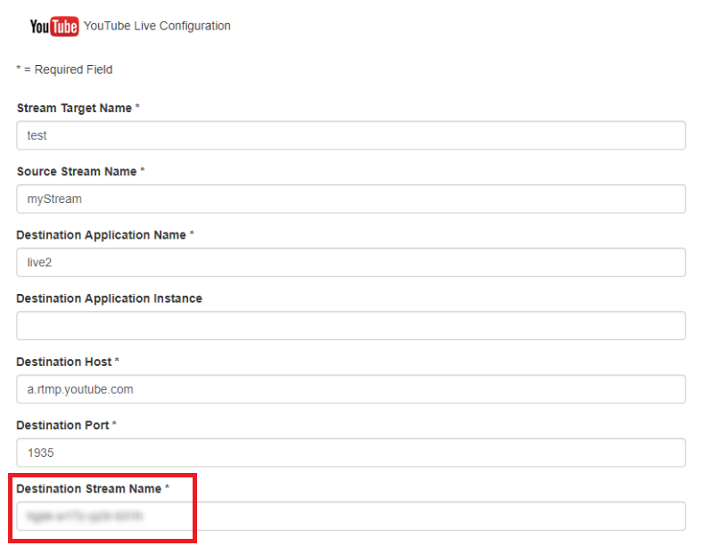
設定好後回到 youtube 會發現上方會出現將開始即將開始，等待一下後直播就會正式開始了
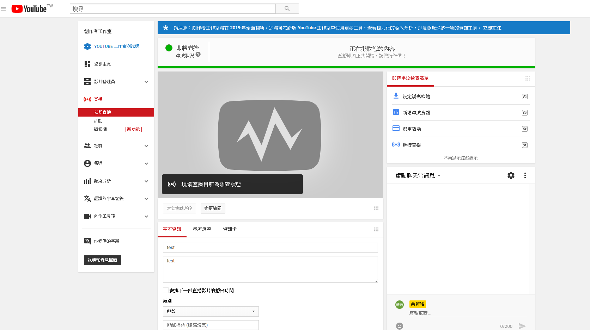
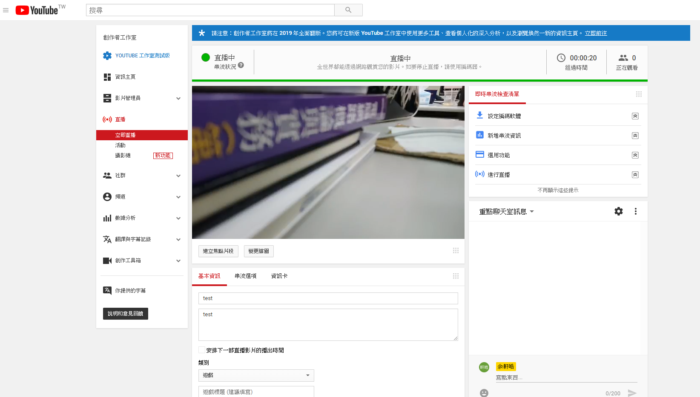